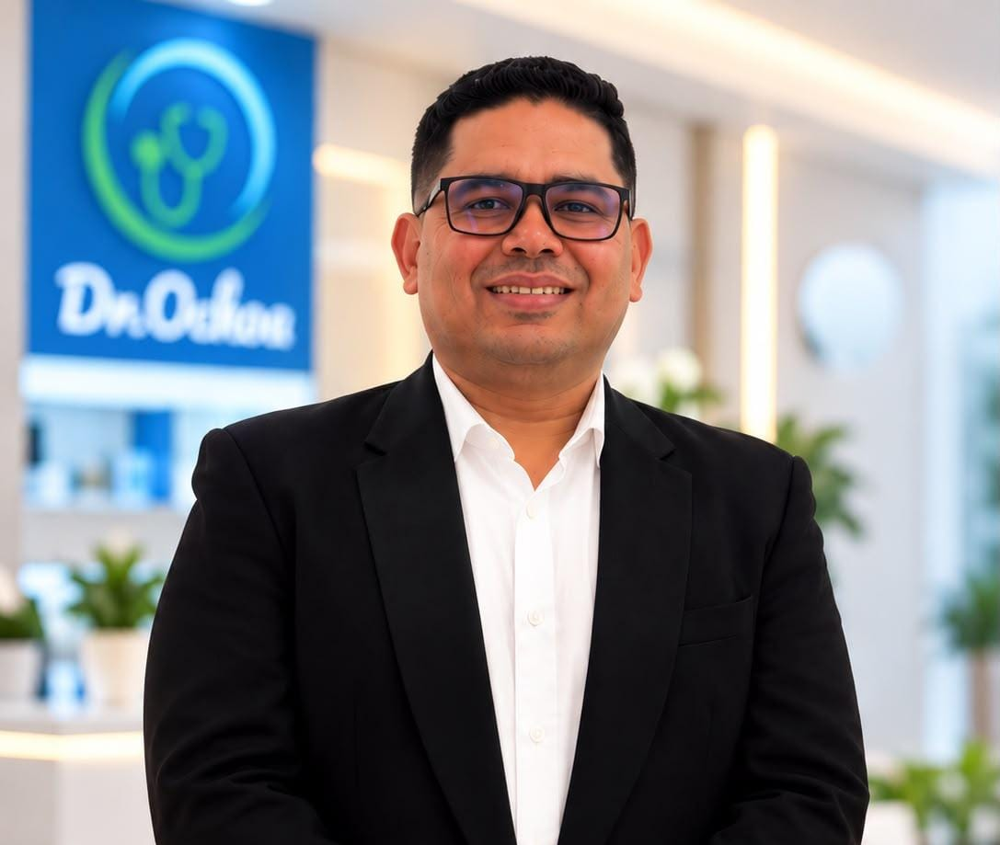

Medicina Estética (con Programa Integral de Peso Saludable), Consulta Externa y Sueroterapia con enfoque preventivo, tecnología avanzada y acompañamiento profesional.

Cuidado integral de los pies: callos, uñas encarnadas, engrosadas, grietas y resequedad.
Valoración médica, cuidado de la piel y el rostro, e incluye el Programa Integral de Peso Saludable.
Disponible en modalidades presencial, virtual y domiciliaria, según tu necesidad.
Evaluamos tu corazón con tecnología confiable e informe interpretado por especialistas.
Con medicamentos antihomotóxicos y homeopáticos de origen alemán.
"Excelente atención, muy profesional y dedicado. Explica todo con calma y se nota que le importa el paciente. Totalmente recomendado."
Ver Consulta Externa"El Programa Integral de Peso Saludable realmente funciona. El seguimiento mensual del doctor marca la diferencia. Me siento mucho mejor."
Ver el programa"La sueroterapia me ha ayudado mucho con mi energía y recuperación. El procedimiento es rápido, cómodo y se nota el resultado desde la primera sesión."
Ver Sueroterapia